- 01 前言-教程内容导读.md.html
- 02 Flutter 开发环境的搭建.md.html
- 03 新手村基础 Dart 语法 (上).md.html
- 04 新手村基础 Dart 语法 (下).md.html
- 05 Flutter 计数器项目解读.md.html
- 06 猜数字界面交互与需求分析.md.html
- 07 使用组件构建静态界面.md.html
- 08 状态数据与界面更新.md.html
- 09 校验结果与提示信息.md.html
- 10 动画使用与状态周期.md.html
- 11 猜数字整理与总结.md.html
- 12 电子木鱼界面交互与需求分析.md.html
- 13 电子木鱼静态界面构建.md.html
- 14 计数变化与音效播放.md.html
- 15 弹出选项与切换状态.md.html
- 16 用滑动列表展示记录.md.html
- 17 电子木鱼整理与总结.md.html
- 18 白板绘制界面交互与需求分析.md.html
- 19 认识自定义绘制组件.md.html
- 20 通过手势在白板上绘制.md.html
- 21 白板画笔的参数设置.md.html
- 22 撤销功能与画板优化.md.html
- 23 应用界面整合.md.html
- 24 数据的持久化存储.md.html
- 25 网络数据的访问.md.html
- 26 教程总结与展望.md.html
- 捐赠
07 使用组件构建静态界面
1. 代码的分文件管理
在计数器项目中，我们知道界面中展示的内容和组件息息相关，其中其决定性作用的是 MyHomePage 组件。但所有的代码都塞在了 main.dart 文件中，随着需求的增加，把所有代码都放一块，显然是不明智的。所以首先来看一下如何分文件来管理代码。
如下所示，先创建一个 counter 文件夹，用于盛放计数器界面的相关代码文件；然后创建 counter_page.dart 文件，并把 MyHomePage 的相关代码放入其中：
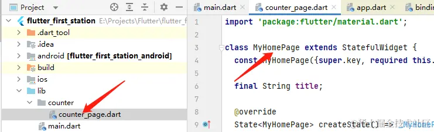
这时，可以将 main.dart 中 MyHomePage 的相关代码删除；会发现红色的波浪线，表示找不到 MyHomePage 类型：
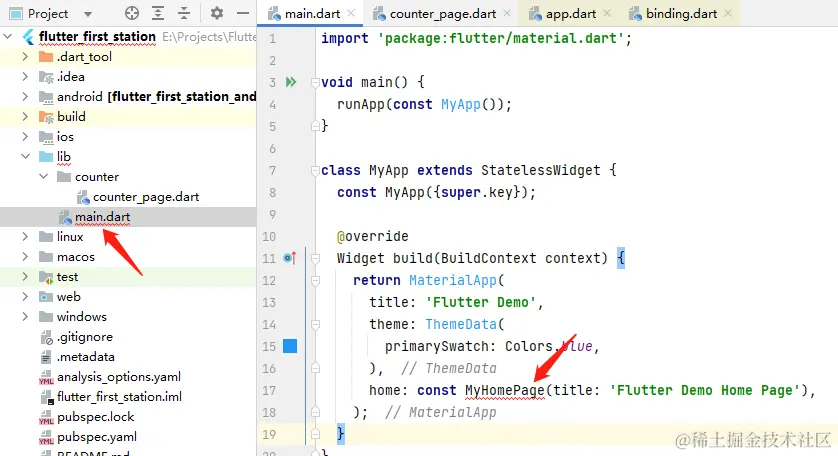
此时只需要通过 import 关键字，在 main.dart 上方导入文件即可：
---->[main.dart]----
import 'counter/counter_page.dart';
// 略同...
分文件管理代码就像整理书籍，分门别类地进行摆放，各个区域各司其职，自己容易检阅，别人也容易看懂。下面创建一个 guess 文件夹，用于盛放本模块 猜数字 小项目的相关代码：
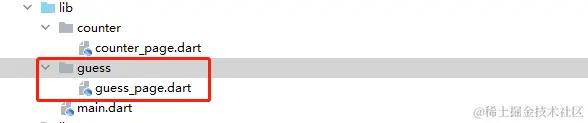
2. 创建你自己的组件
首先要明确一点，文件夹的名称、文件的名称、类型的名称、属性的名称、函数的名称，都是可以任意的，甚至可以使用汉字(但不建议)，只要在使用时对应访问即可。但一个好名字对于阅读来非常重要，取 a1,c,b,d45,rrr 这样的名字，对阅读者而言是灾难，也许过两天，连你自己也认不得。所以一个好名字是个非常重要，不要偷懒， 最好有明确的含义。
比如对于猜数字这个需求来说，整体的界面可以叫 GuessPage , 这里我们可以先借用一下计数器中 MyHomePage 代码，照葫芦画瓢，改巴改巴。先把 MyHomePage 代码复制到 guess_page.dart 中。
重命名小技巧: 当你想对一个类型、函数、属性名进行重命名，并且想让在它们使用使用处自动修改。可以将鼠标点在名称上，右键 -> Refactor -> Rename ; 也可以使用后面的快捷键直接操作。
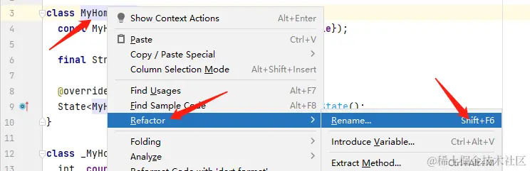
输入新名称后，点击 Refactor , 所有使用处都会同步更新：
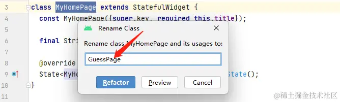
然后在 main.dart 中，将 GuessPage 作为 home 参数，即可展示 GuessPage 组件中的界面效果：
---->[main.dart]----
import 'guess/guess_page.dart';
// 略同...
home: const GuessPage(title: '猜数字'),
接下来的任务是如何修改代码，来完成猜数字的功能需求。首先我们来完成一件简单的事：
点击按钮生成随机 0~99 之间的数字
| 初始效果 | 点击生成随机数 |
|---|---|
3.随机数的生成与界面更新
计数器项目中，点击按钮之所以界面数字自加，是因为 _incrementCounter 方法中，触发了 _counter++ 。所以想要在点击时显示随机数，思路很简单：将 _counter 变量赋值为随机数即可。
void _incrementCounter() {
setState(() {
_counter++;
});
}
所以首先需要了解一下 Dart 中如何生成随机数：在 dart 的 math 包中，通过 Random 类型可以生成随机数。这里生成的是随机整数，使用 nextInt 方法，它有一个入参，表示生成随机数的最大值(不包含)。比如传入 100 时，将返回 0~99 之间的随机整数：
import 'dart:math';
Random _random = Random();
_random.nextInt(100);
这样，点击按钮时只要将 _counter 赋值为随机数即可，如下所示：
void _incrementCounter() {
setState(() {
_counter = _random.nextInt(100);
});
}
但之前说过，名字非常重要。但这里 _counter 含义是计数器，_incrementCounter 含义是自增计数器，在当前需求的语境中并不是非常适合。起名字最好和其功能相关，比如可以将数值变量可以称之 _value ; 方法可以称之 _generateRandomValue，这样代码阅读起来就会更容易理解。
同样，也可以使用 Refactor 重命名：
class _GuessPageState extends State<GuessPage> {
int _value = 0;
Random _random = Random();
void _generateRandomValue() {
setState(() {
_value = _random.nextInt(100);
});
}
4. 头部栏 AppBar 和输入框 TextFiled 的使用
接下来，我们要将头部的标题栏 AppBar 改成如下的样式，中间是可以输入的输入框，右侧是一个运行的图标按钮。
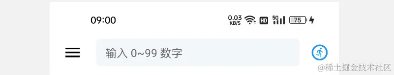
AppBar 常用于左中右布局结构，如下所示：
AppBar(
leading: 左侧,
actions: [右侧列表],
title: 中间部分,
)
也就是说在不同的参数中，可以插入不同的组件进行显示。比如这里 leading 指定为 Icon 组件，展示图标：
leading: Icon(Icons.menu, color: Colors.black,),
actions 入参是一个组件列表，这里放入一个 IconButton 组件，展示图标按钮：
actions: [
IconButton(
splashRadius: 20,
onPressed: (){},
icon: Icon(Icons.run_circle_outlined, color: Colors.blue,)
)
],
title 入参是中间部分，使用 TextField 组件展示输入框。这里组件构造时的入参对象都是用于配置展示信息的，可以简单认识一下，不用急着背诵，以后慢慢接触，早晚都会非常熟悉。
TextField(
keyboardType: TextInputType.number, //键盘类型: 数字
decoration: InputDecoration( //装饰
filled: true, //填充
fillColor: Color(0xffF3F6F9), //填充颜色
constraints: BoxConstraints(maxHeight: 35), //约束信息
border: UnderlineInputBorder( //边线信息
borderSide: BorderSide.none,
borderRadius: BorderRadius.all(Radius.circular(6)),
),
hintText: "输入 0~99 数字", //提示字
hintStyle: TextStyle(fontSize: 14) //提示字样式
),
),
最后说一下，如何去掉顶部的灰块：AppBar 组件在构造时，可以通过 systemOverlayStyle 入参控制状态类和导航栏的信息。如下代码可以使顶部状态栏变成透明色，文字图标是暗色：
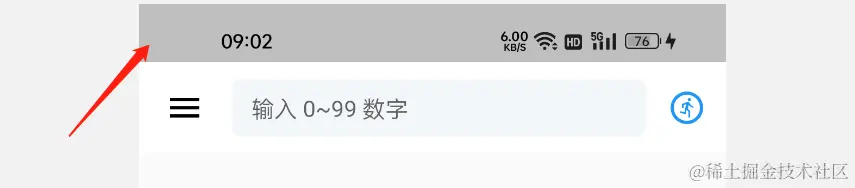
AppBar(
systemOverlayStyle: SystemUiOverlayStyle(
statusBarIconBrightness: Brightness.dark,
statusBarColor: Colors.transparent
),
5. 叠放 Stack 组件和列 Column 组件的使用
当用户输入的数字大了，或小了。需要界面上给予提示。为了更加醒目，这里给出的设计如下所示。如果大了，上半屏亮红色，展示 大了；如果小了，下半屏亮蓝色，展示 小了：
| 小了提示 | 大了提示 |
|---|---|
可以看出此时中间的文字是浮在提示色块之上的，想实现这种多个组件层层堆叠的效果，可以使用 Stack 组件来完成。其构造函数中 children 入参传入组件列表，在显示层次上后来居上。
如下所示，将 Stack 作为 body , 在其中放入一个红色的 Container 容器组件, 以及之前的主内容。运行后会看到：中间文字就会浮在红色容器之上。
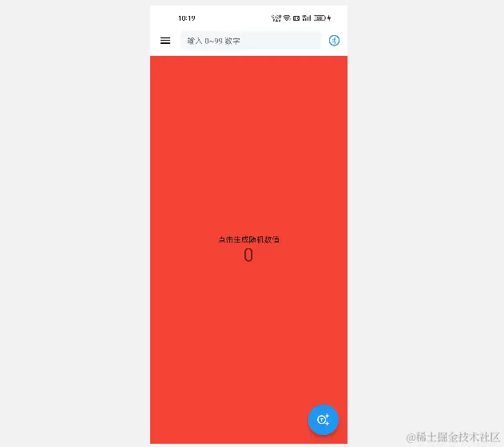
body: Stack(
children: [
Container(color: Colors.redAccent),
//主内容略...
],
),
除了堆叠的效果，还有一个问题，如何实现 上下平分区域 呢? 我们前面知道 Column 组件可以让两个组件竖直排列。在 Column 中可以通过 Expanded 组件延展剩余区域，另外 Spacer() 组件相当于空白的 Expanded。当存在多个 Expanded 组件时，就可以按比例分配剩余空间，默认是 1:1 ，也可以通过 flex 入参调节占比。举个小例子，如下所示：
| Expanded 红+Expanded 蓝 | Expanded 红+ Spacer |
|---|---|
---->[红+蓝]----
Column(
children: [
Expanded( child: Container(color: Colors.redAccent)),
Expanded( child: Container(color: Colors.blueAccent)),
],
),
---->[红+空]----
Column(
children: [
Expanded( child: Container(color: Colors.redAccent)),
Spacer()
],
),
到这里，猜数字项目中需要使用的基础组件就已经会师完毕。大家可以基于现在已经掌握的知识，完成如下效果： 注: Container 组件的 child 入参可以设置内容组件。 本例参考代码见： guess_page.dart
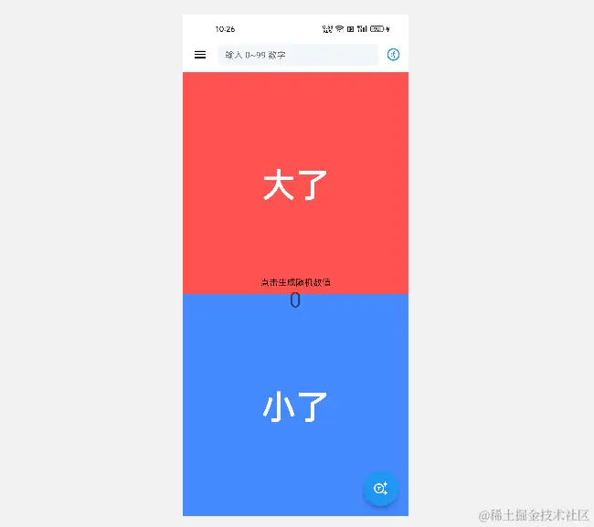
6.组件的简单封装
上面虽然完成了布局效果，但是从 guess_page.dart 中可以感觉到，随着需求的增加，各种组件全都塞到了一块。这才只是一个简单的布局，就已经有点不堪入目了；如果再加上交互的逻辑，恐怕要乱成一锅粥了。
其实对于新手而言，编程语言语法本身并不是什么难事，对规整代码的把握才是最大的挑战；很容易要什么，写什么，最后什么东西都塞在一块，连自己都看不下去了，从而心灰意冷，劝退放弃。小学时，老师就教导我们，遇到巨大的问题，要尝试将它分解成若干个小问题，逐一解决。
其实有些大问题在肢解过程中，会有某些类似的小问题，这些小问题可以通过某种相同的解决方案来处理。这种通用解决方案，就是一种封装的思想，问题的专属解决方案一旦封装完毕，输入问题，就可以解决问题，使用者不必在意处理的过程，可以大大提升解决问题的效率。回忆一下，在介绍函数时，通过 bmi 函数，封装体质指数的计算公式，就是通过函数来封装解决方案。
对于组件来说，也是一样：某些相似的结构，也可以通过 封装 进行复用。比如这里 大了 和 小了 只是颜色和文字不同，两者的结构类似。就可以通过封装来简化代码：
最简单的封装形式是通过函数封装，通过入参来提供界面中差异性的信息，如下所示 _buildResultNotice 函数接收颜色和消息，返回 Widget 组件:
Widget _buildResultNotice(Color color, String info) {
return Expanded(
child: Container(
alignment: Alignment.center,
color: color,
child: Text(
info,
style: TextStyle(
fontSize: 54, color: Colors.white, fontWeight: FontWeight.bold),
),
));
}
如果把相似的结果写两遍，只会徒增无意义的代码。而封装之后，只需要调用方法，就可以完成任务：
Column(
children: [
_buildResultNotice(Colors.redAccent,'大了'),
_buildResultNotice(Colors.blueAccent,'小了'),
],
),
如果封装体的代码非常复杂，或者需要单独维护，以便之后修改方便定位，也可以通过新组件的形式来封装组件。如下所示，新创建 result_notice.dart 文件，在其中定义 ResultNotice 组件，专门处理结果提示信息的展示任务。
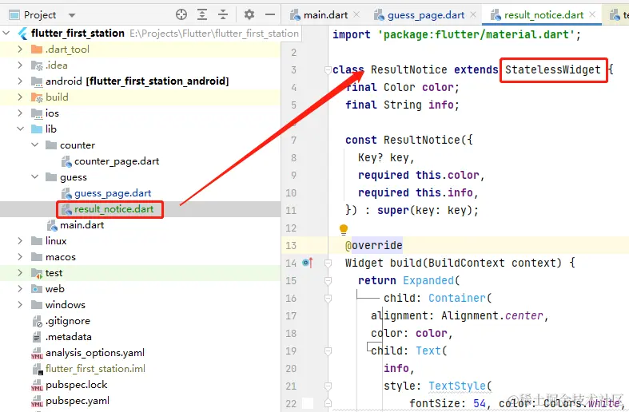
一方面，专人专用，需要更改时直接在这里更改。比如你让另一个人帮忙改改某处的代码，而他对项目不熟悉，如果代码分离的得当，你告诉他这个界面由 xxx.dart 文件负责，他就可以在不了解项目的前提下，对界面进行修改。这就是 职责分离 的益处。不同人干自己擅长的事，有利于整体结构的稳定。
另一方面也能缓解 guess_page.dart 中的代码压力，不至于随着需求的增加代码量激增，对可读性友好。在使用时，可以将 ResultNotice 视为普通的组件，放在 Column 之中：
Column(
children: [
ResultNotice(color:Colors.redAccent,info:'大了'),
ResultNotice(color:Colors.blueAccent,info:'小了'),
],
),
同样，这里 AppBar 组件的构建逻辑也是太复杂的，可以在 guess_app_bar.dart 中单独维护。这里主要是出于简化 guess_page.dart 中代码的考量，不强求可复用性。
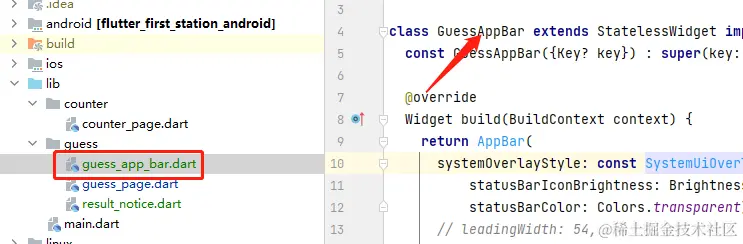
这样 guess_page.dart 中的代码就整洁了很多，其他两个文件也在各司其职。相对与之前全塞在一块，更便于阅读，封装之后的代码见 guess_page.dart 。
7.本章小结
本章主要学习了如何通过 Flutter 框架提供的组件，来搭建期望的界面呈现效果。期间介绍了如何分文件来管理代码、以及通过自定义组件来封装构建逻辑。最后简单分析了一下组件封装的优势。
学完本章，你应该能够自己动手搭建一些简单的静态界面了。但应用程序是要和用户进行交互的，就需要界面随着用户的交互进行变化。下一篇将从用户交互的角度，通过代码来实现猜数字的具体功能。
© 2019 - 2023 Liangliang Lee. Powered by gin and hexo-theme-book.